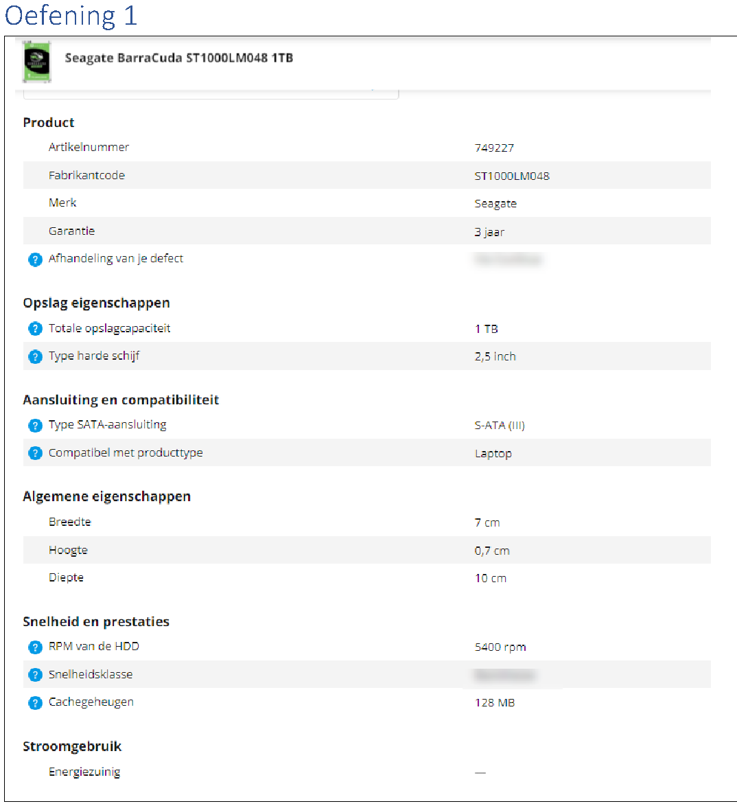
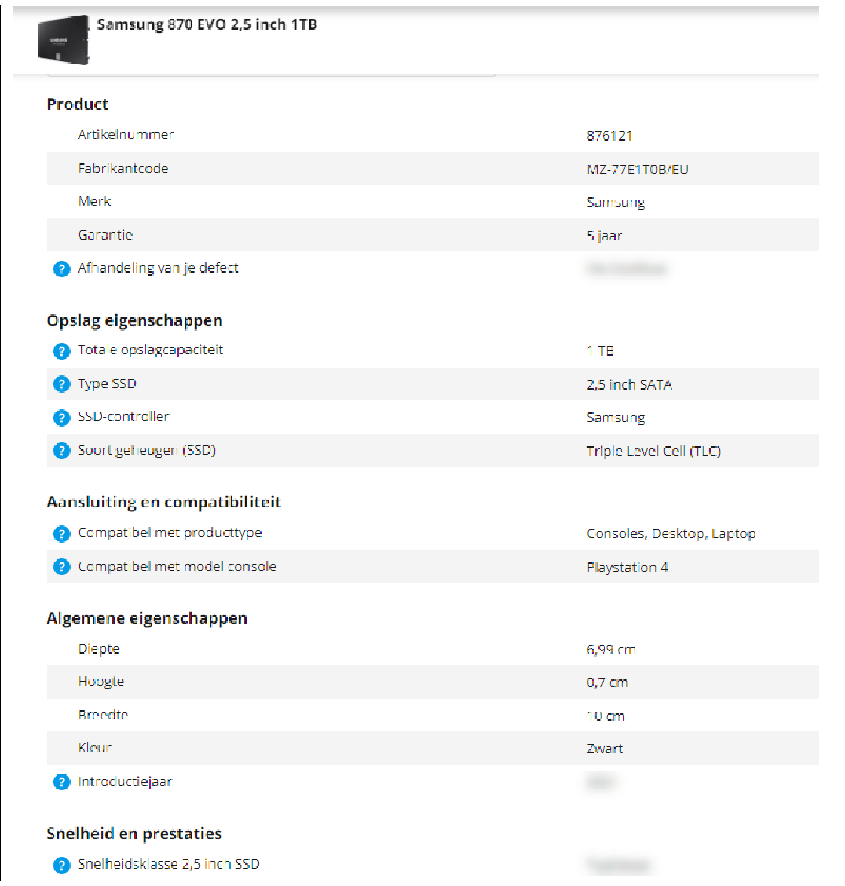
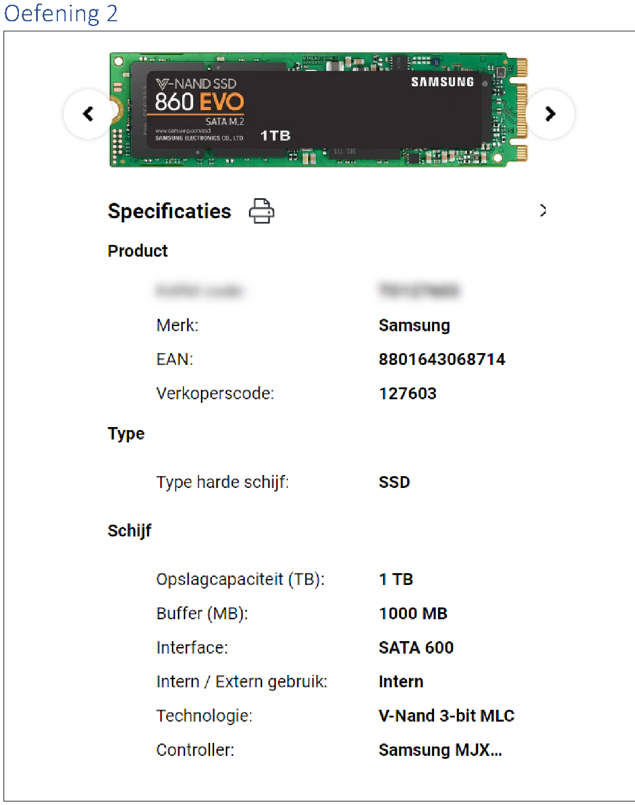
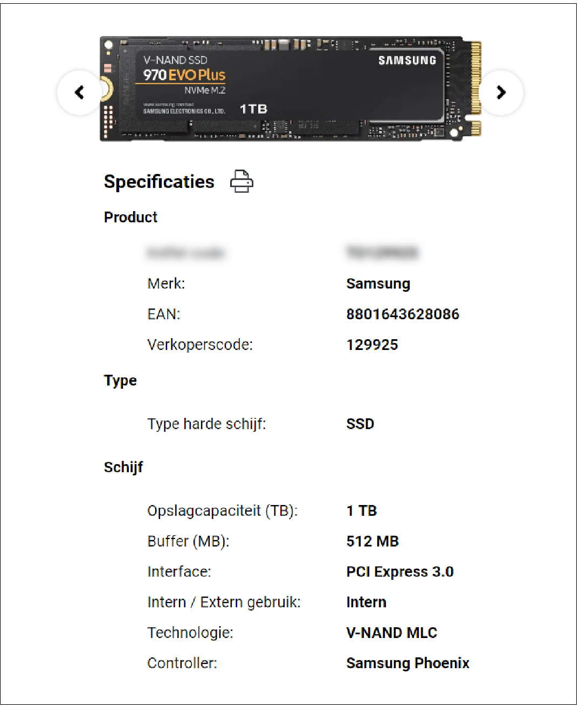
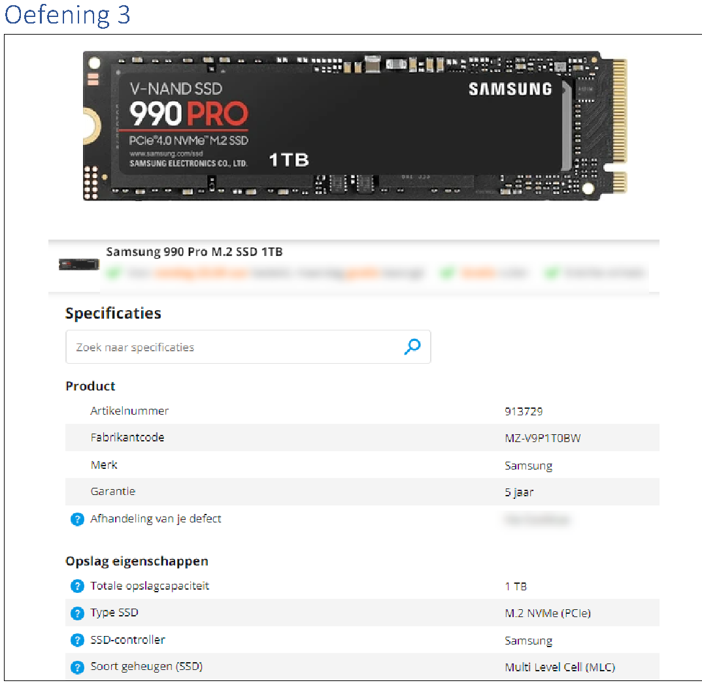
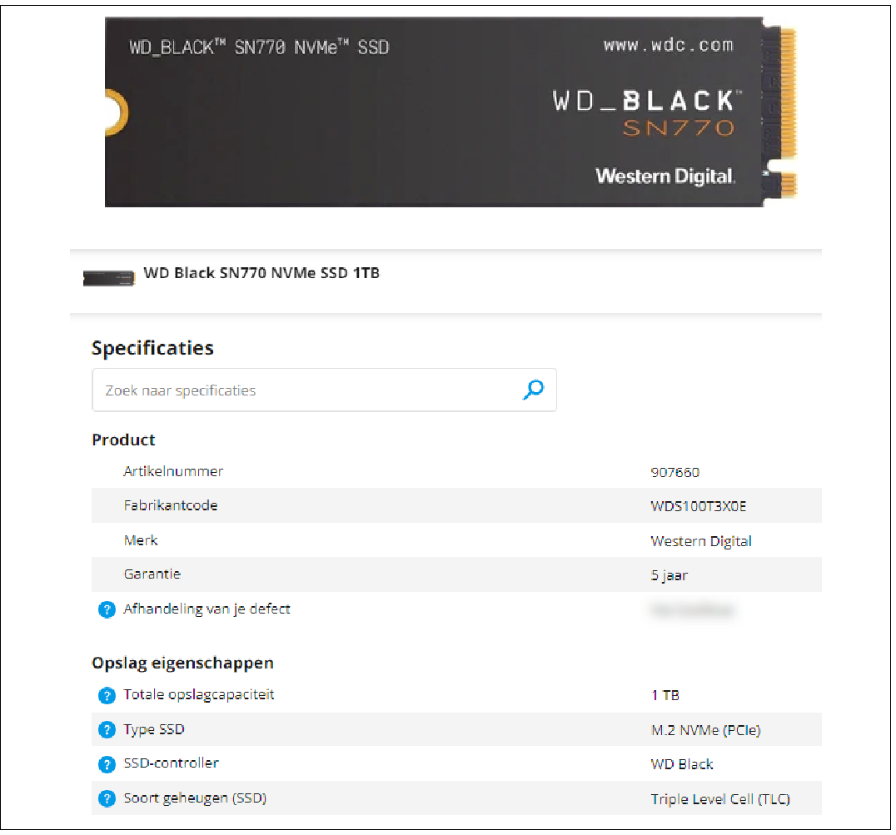
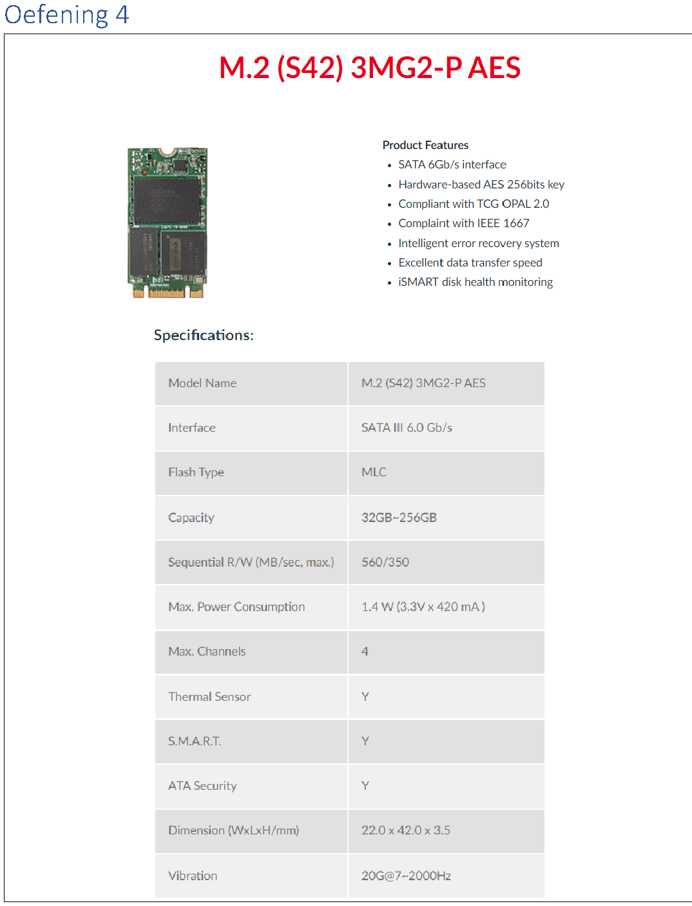
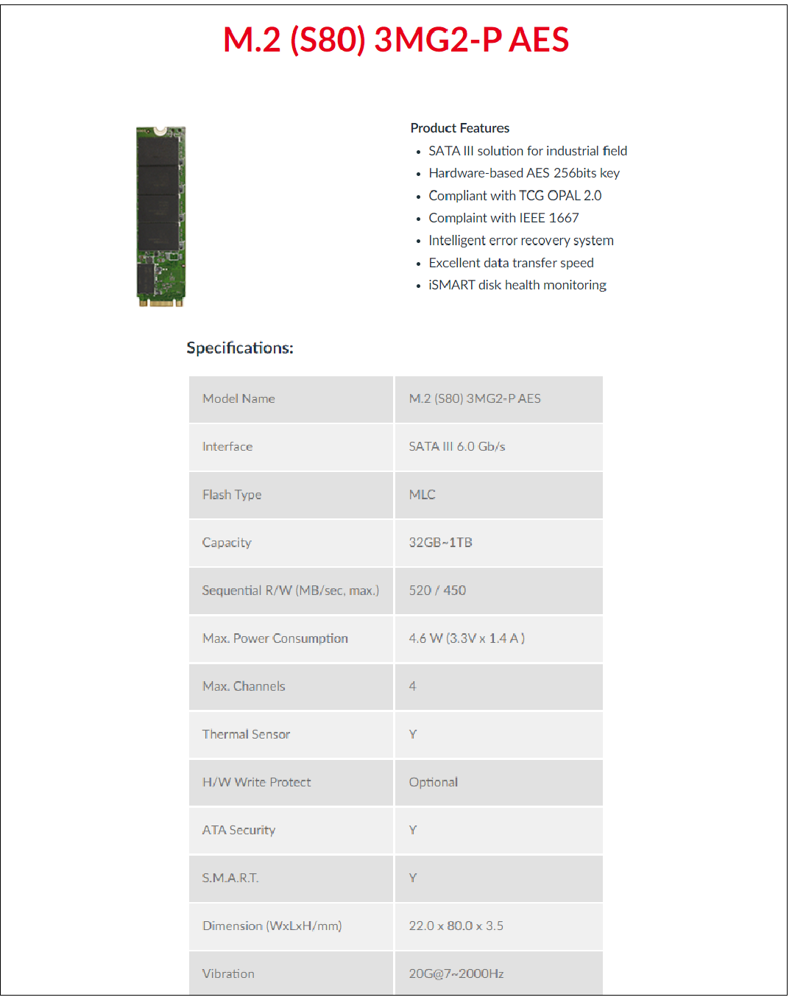
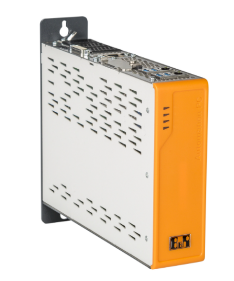
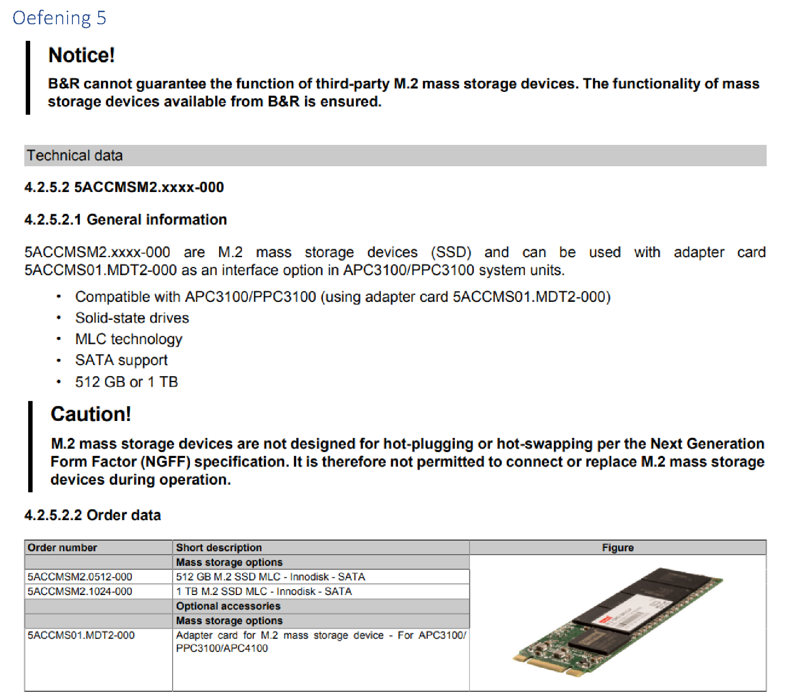

We starten de zoektocht naar een nieuwe harde schijf. Je krijgt telkens een concrete probleemsituatie met twee mogelijke oplossingen.
Aan jou om telkens de beste oplossing te kiezen.
Oefening 1
De harde schijf van onze laptop is vol en we willen deze uitbreiden naar 1 TB. Omdat we er ook onze programma's zullen op installeren is vooral snelheid belangrijk.


Wat is het voornaamste verschil tussen de twee harde schijven?
De Seagate is een mechanische harde schijf, met platters die aan 5400
toeren per minuut draaien en met koppen die zich moeten verplaatsen. De Samsung is een SSD
zonder bewegende delen. Voor de rest lijken ze op elkaar: allebei 1 TB, allebei 2,5 duim en
allebei aan SATA.
Welke harde schijf zou je kiezen als je enkel rekening moet houden met prestaties?
De Samsung 870 EVO. Bij een SSD vallen de seek time en de rotational
latency weg, en juist die twee maken het openen van een programma traag.
Oefening 2
Online hebben we twee harde schijven gevonden: een Samsung 860 EVO en een Samsung 970 EVO. Ze zien er ongeveer hetzelfde uit en ze hebben beiden 1TB aan opslag.


Wat is het voornaamste verschil tussen de twee harde schijven?
Allebei zijn het M.2-schijven, maar de 860 EVO praat over SATA en de
970 EVO Plus over PCI Express. Dat is het verschil tussen AHCI over SATA en NVMe over PCI
Express, en niet het verschil in vormfactor.
Welke harde schijf zou je kiezen als je enkel rekening moet houden met prestaties?
De 970 EVO Plus. SATA III loopt vast op 600 MB/s en een moderne SSD haalt
dat probleemloos, dus de 860 EVO zit tegen het plafond van zijn interface. PCI Express heeft
die grens niet.
Oefening 3
Opnieuw vergelijken we twee harde schijven met elkaar die er op het eerste zicht heel gelijkaardig utizien.


Wat is het voornaamste verschil tussen de twee harde schijven?
Het soort geheugencel. De Samsung is een MLC met twee bits per cel, de
WD een TLC met drie. Verder zijn het allebei M.2-schijven van 1 TB die NVMe over PCI Express
spreken.
Welke harde schijf zou je kiezen als je enkel rekening moet houden met prestaties?
De Samsung 990 Pro. Hoe meer bits er in een cel staan, hoe meer
spanningsniveaus de controller uit elkaar moet houden en hoe trager het lezen en schrijven
gaat: een TLC leest 4 keer en schrijft 6 keer trager dan een SLC.
Welke harde schijf zou je kiezen als je enkel rekening moet houden met levensduur?
Opnieuw de Samsung 990 Pro. Bij minder bits per cel liggen de
spanningsniveaus verder uit elkaar, dus een cel mag meer slijten voor de controller ze niet
meer uit elkaar houdt. Een MLC haalt daardoor meer schrijfcycli dan een TLC.
Oefening 4
InnoDisk is een fabrikant van harde schijven die worden gebruikt in industriële omgevingen. In hun aanbod vind je twee harde schijven die opnieuw goed op elkaar lijken: M.2 aansluiting, beiden SATA, beiden MLC, een opslagcapaciteit en snelheden die je (ongeveer) kan vergelijken met elkaar, … Maar toch verschillen ze. De ene M.2 is duidelijk de andere niet!


Wat is het voornaamste verschil tussen de twee harde schijven?
De lengte. De S42 is 42 mm lang en de S80 is 80 mm, allebei 22 mm breed.
Dat is precies waar je op moet letten bij een M.2-schijf: het slot en de bevestigingsschroef
op het moederbord liggen op een vaste plaats, dus een schijf van 80 mm past niet in een
toestel dat er 42 verwacht. De S80 gaat daarbij tot 1 TB waar de S42 op 256 GB stopt, en
verbruikt 4,6 W tegen 1,4 W.
Oefening 5

De B&R PC3100 industriële computer heeft de mogelijkheid om een harde schijf aan te sluiten via een M.2 aansluiting (met een adapter).
In de datasheet waarschuwt de fabrikant echter dat ze niet kunnen garanderen dat alle M.2 schijven compatibel zijn. Er zijn, zoals je ondertussen wel al hebt gemerkt, toch wel wat verschillen.

Doe een voorstel wat betreft een compatible harde schijf. Zoek online.
Een M.2-schijf die SATA spreekt en geen NVMe, met MLC-geheugen. De
besteltabel van B&R zelf noemt de 5ACCMSM2.0512-000 en de 5ACCMSM2.1024-000, en dat zijn
Innodisk M.2 SSD's met MLC over SATA. De InnoDisk 3MG2-P AES uit oefening 4 is dus een
verdedigbaar voorstel, op voorwaarde dat je de lengte neemt die de adapterkaart
5ACCMS01.MDT2-000 aankan.